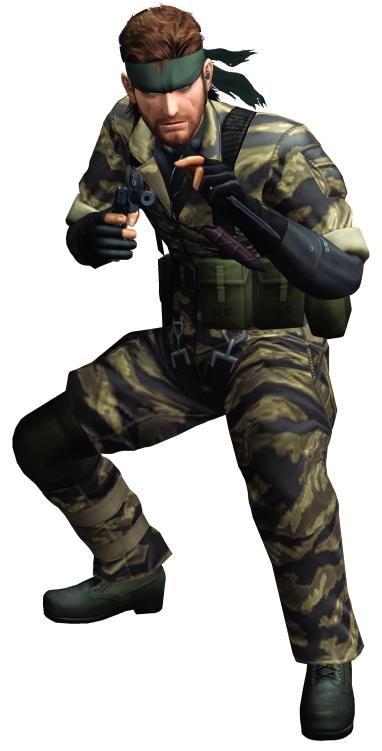

- 1.개요
- 2.메탈기어 솔리드 이전
- 3.메탈기어 솔리드에서
1.개요
메탈기어 시리즈의 등장인물. 메탈기어 솔리드 3, 메탈기어 솔리드 포터블 옵스, 메탈기어 솔리드 피스 워커의 주인공이자,
설정상 최초로'스네이크'라는 코드명으로 활약한 미국 첩보원이다.
또한 메탈기어 솔리드 3의 엔딩 시점에서 린든 B. 존슨 미합중국 대통령에 의해 빅 보스라는 칭호를 받게 되며,
이후 스네이크라는 코드네임과 함께 사용하게 된다.
본 문서에서는 그가 자신을 '스네이크'로 칭했던 세 작품과, 코드네임에 Snake가 포함된 메탈기어 솔리드 V 그라운드 제로즈에서의 일부 행적을 다룬다.
골판지 상자, 시베리안 허스키[8]에 대한 애정이 높으며, 게임에서 먼저 묘사된 솔리드 스네이크의 그것을 가뿐히 뛰어넘는다.
같은 분야에서 열정을 보이는데도 이 두 사람의 대사 톤과 표현 등이 완전히 차이가 나기 때문에, 이를 구분해서 들어보면 재밌다.
여기에 아들들과의 차이점이 하나 더 있다면 총덕후 기질도 다분한데다[10] 은근히 개그 욕심도 큰 편이고, 첩보원답지 않게 어두운 곳이나 흡혈귀 영화를 싫어무서워하는 의외의 면도 있다.
2.메탈 기어 솔리드 이전
본 항목은 현재의 공식 설정에 충실하여 작성되었다. 원래 네이키드 스네이크의 초기 설정을 보려면 빅 보스 항목 참고.
1935년 출생. 본명은 "존". 다만 스네이크라는 콜 사인을 얻기 전에는 별명인 잭으로 더 많이 불렸다.
영국인과 일본인의 혼혈로 10대 시절인 1950년대부터 미 육군의 병사로 입대해서 군 경력을 본격적으로 쌓기 시작했고, 10대라는 어린 나이지만 한국전쟁에도 참가했다.
이후 그린베레, 와일드 기스 소속이 되어 활약하며 70회 이상의 임무를 성공적으로 완수했다.
그리고 만 17세 때 제 2차 세계대전을 승리로 이끈 특수부대의 어머니 '더 보스'를 만나 스승으로 삼게 되어 그녀로부터 각종 전투, 폭파공작, 정보전, 저격 등을 배우게 된다. 또한 생존 훈련을 받으며 이때 처음으로 그는 '뱀'을 먹게 된다.
그리고 1954년 비키니 산호초섬에서 일어난 수소폭탄 실험 '캐슬 브라보'[14]에 휘말려 불임이 되었으며, 이후 더 보스와 함께 CQC를 창안했다.
또한 1961년 경엔 베트남전에서도 은신 임무를 수행했다.
3.메탈 기어 솔리드 에서
Naked Snake (벌거벗은 뱀)
작품의 배경이 되는 시대는 2차 세계대전이 끝나고 세계가 동서로 나뉘어 한창 냉전중인 1964년. 그의 나이가 29세인 젊은 시절이다.
활동 초창기에는 스승인 더 보스와 함께 활동했던 모양으로 당시 코브라 부대가 전원 소련으로 넘어간 상황이라 서방에 있던 거의 유일한 더 보스의 제자였다.
그 열정은 타 코브라 부대원과도 달라서 수제자를 넘어 스승과 제자 이상의 유대감, 아니 그에게는 정신적인 어머니라 느낄 정도.
당시 무기를 든 상태에서 사용할 수 있는 근접전투술의 필요성을 느껴 더 보스와 함께 CQC를 창안해낸다.
이후 더 보스가 그의 앞에서 홀연히 사라진 뒤에도 여러 미션을 수행했으며 그 능력을 높이 평가한 제로 소령에 의해 CIA소속 특수부대 FOX의 초창기 전투원으로 배속.
이전부터 FOX에서 추진하고 있었던 스니킹 미션의 첫 미션을 실행한다. 첫번째 미션의 미션 명은 버츄어스 미션.
3.1.감춰진 진실, 그리고 결말
사실 더 보스의 위장망명은 미국측과 소련측으로 분할된 현자들이 현자의 유산을 둘러싸고 일어난 항쟁으로 더 보스의 위장망명은 계획된 내용이었다.
하지만 망명시 더 보스가 가져온 데이비 크로켓을 볼긴 대령이 소코로프 설계국에 쏴 버리는 예기치 못한 사건이 발생
한술 더 떠 범인이 더 보스로 지목되는 바람에 국제 문제로까지 부각되었고,[35] 소련은 제2전비상태를 발령한 상황. 이로 인해 어쩔 수 없이 더 보스의 암살을 명할 수 밖에 없었던 것.
본래 관계자들 외에는 아무에게도 알려지지 않은 사실이었으나, 중국측 현자들의 스파이였던 EVA에 의해 네이키드 스네이크에게 진실이 전해지게 된다.
스네이크 이터 작전 종료 후, 네이키드 스네이크는 세계를 3차대전에서 구한 영웅으로 미 대통령에게 직접 표창을 받게 되며, 이 때 더 보스를 뛰어넘은 진정한 보스라는 의미를 담은 빅 보스의 칭호를 받게 된다.
참고로 엔딩에서 스네이크가 대통령과 악수를 할 때 R1을 눌러 숨겨진 1인칭 시점으로 전환할 수 있는데, 카메라를 창밖 쪽으로 잡으면 오셀롯이 그 특유의 포즈를 하는 것을 볼 수 있고
애국자의 무덤 앞에 꽃과 패트리어트를 내려놓고 경례를 할 때 1인칭 시점으로 전환하면 화면이 눈물을 흘리듯 흐려지는 것을 볼 수 있다.